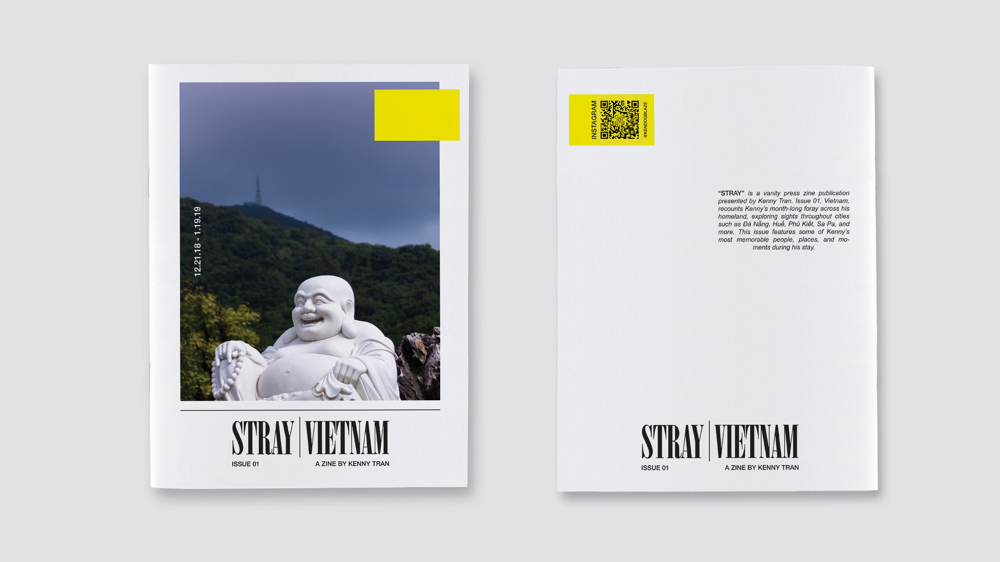

“STRAY” | Vietnam
“STRAY” is a vanity press zine publication presented by me. Issue 01, Vietnam, recounts my month-long foray across my homeland, exploring sights throughout cities such as Đà Nẵng, Huế, Phú Kiết, Sa Pa, and more. This issue features some of the most memorable moments during my stay. I had taken around 3000 photos during my trip and wanted to use them in some project. Thus, "STRAY" was born as an exploration of landscape and street photography. Attached here is a PREVIEW of the full zine.
